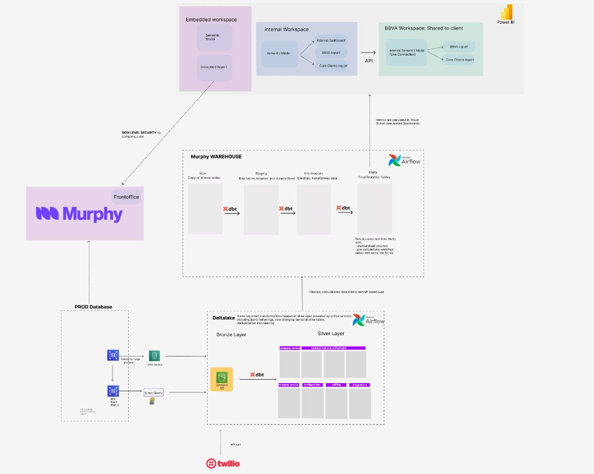

Building data infrastructure that scales
Four sections
Building data systems across industries
End-to-end analytics infrastructure for a multi-tenant SaaS · Murphy

MetricFlow server: single source of truth for metrics across BI and AI
What the platform enables
Automated LLM-based compliance evaluation for AI debt collection agents · Murphy
Automated compliance evaluation at scale
What the QA system enables
Production-tested across the full data engineering lifecycle
| Category | Technologies |
|---|---|
| Languages | PythonSQLBash |
| Transformation | dbtApache SparkPandasDelta Lake |
| Orchestration | Apache AirflowGitHub Actions |
| Cloud & Storage | AWS S3RedshiftAthenaDMSPostgreSQL |
| Streaming | Apache KafkaMSK |
| Infrastructure | KubernetesArgoCDTerraformDocker |
| Analytics & BI | Power BIMetricFlowSupersetSemantic Layer |
| AI / LLM | GPT / OpenAILangfusePrompt EngineeringLLM Evaluation |
Academic and professional training
Always interested in ambitious data challenges.